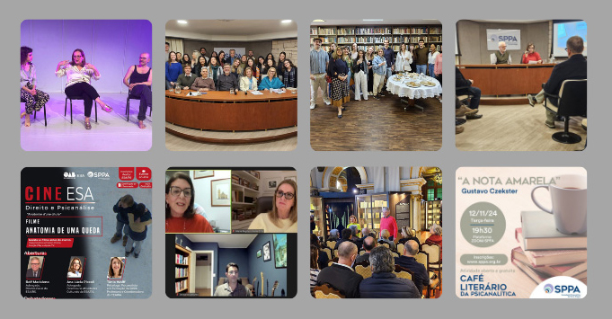

Intensa atividade insere a Psicanálise em diversas áreas culturais
- 
 Falta legenda
Falta legenda
A diretoria da Psicanálise na Cultura promoveu intensa movimentação e várias atividades no segundo semestre de 2024. A parceria com o Instituto Ling resultou em dois instigantes cursos, ministrados por psicanalistas da SPPA. “O novo mal-estar na cultura: uma leitura psicanalítica do contemporâneo”, com José Carlos Calich, foi realizado em julho, oportunizando uma reflexão sobre questões acerca do que nos torna humanos e quais as hipóteses para o porquê da desilusão e da destrutividade. Em novembro, ocorreu o debate “Entre novas ferramentas e velhas ilusões, um olhar psicanalítico”, com Maria Cristina Vasconcellos, que propôs uma reflexão sobre o tema da tecnologia na vida moderna.
No final de julho, foi a vez de um encontro especial: “Conversando com Borges sobre o Sul infinito!”. Na Biblioteca Pública do Estado do Rio Grande do Sul, ocorreu uma visita guiada à exposição “Babel (In) Finita de Borges”, que inclui mais de 300 obras raras dos séculos 16, 17 e 18 até os tempos mais recentes, todas pertencentes ao acervo do médico e bibliófilo Gilberto Schwartsmann. Após esse passeio, os participantes encontraram-se com o avatar do escritor Jorge Luis Borges, com mediação de Gilberto Schwartsmann, na companhia de Juarez Cruz, psicanalista da SPPA, e curadoria de Facundo Sarmiento. Foi um momento empolgante e um cenário muito rico para a imaginação do público.
Em agosto, sob a coordenação da diretora de Psicanálise na Cultura, Regina Pereira Klarmann, uma palestra abordou a crise climática atual. O convidado Rualdo Menegat, coordenador do Atlas Ambiental de Porto Alegre, brindou a todos com a temática “Clima, Ciências, Profecias - qual é o nosso futuro?”. De forma muito didática, o público pôde ouvir, pensar e refletir sobre as questões do futuro da vida humana, pois, segundo o palestrante, “não temos a opção de nada mudar”.
O evento Portas Abertas, também realizado em agosto, recebeu interessados na história, na formação psicanalítica e nos projetos científicos e sociais da SPPA. Membros da diretoria da de nossa instituição conversaram com o público, tiraram dúvidas e oportunizaram muitas trocas de informações.
O tradicional Café Literário prosseguiu realizando efetivas trocas de conhecimento entre a literatura e a psicanálise. Durante o semestre, foram realizados encontros que debateram obras como “Estela sem Deus”, de Jeferson Tenório, tendo como convidados o professor Francisco Lovato e a psicanalista Maria Elisabeth Cimenti. A obra “Lisístrata”, de Aristófanes, reuniu o poeta Leonardo Antunes e a psicanalista Heloisa Cunha Tonetto, enquanto “A nota amarela” de Gustavo Czekster, trouxe o autor e escritor Gustavo Czekster e o psicanalista Raul Hartke.
O Ciclo de Estudos apresentou os cursos “Introdução ao pensamento de René Roussillon”, “Adolescente: Um processo de crescimento”, “Introdução ao pensamento de Bion” e ainda “Principais contribuições de Winnicott à teoria e à clínica“. Em colaboração com o Centro de Estudos Luís Guedes (CELG), ocorreu o Ciclo de Estudos “Conhecendo as bases teóricas da Psicanálise”, destinado a estudantes e profissionais da psicologia e da psiquiatria.
A atividade conjunta com a Escola Superior de Advocacia, o Cine ESA - Direito e Psicanálise, apresentou o filme “Diário de uma queda” no formato on-line, tendo como debatedores o professor de Direito Cesar Peres e Emílio Salle, psicanalista da SPPA. Em agosto, uma nova parceria entre a SPPA e a Cia Espaço em Branco resultou na apresentação da peça “A Fome”, na Sala Álvaro Moreyra. A temática densa, que versava sobre dilemas e sofrimento psíquico, mesclada com imagens, luzes e sons, pôde ser ressignificada no bate-papo após o espetáculo, que contou com as presenças da psicanalista Denise do Prado Bystronsky, do diretor e ator João Ricardo e da atriz Sissi Venturim.
A Liga de Psiquiatria e Saúde Mental (Lipsam) e a SPPA promoveram um debate sobre o filme “Pobres Criaturas”. Cheio de ficção científica e fantasias, o filme conta a história de uma mulher/criatura/bebê com sede de conhecer a sexualidade e o mundo. Em um corpo de mulher, Bella é ingênua e curiosa, mas, ao mesmo tempo, é uma criança sem limites e, portanto, humana. Um enredo que proporcionou reflexões a respeito dos dilemas do nosso ser e viver. Tiago Crestana, psicanalista da SPPA, e Gabriela Petri Airoldi da Rocha, vice-presidente da Lipsam, conduziram o diálogo sobre este belo e intrigante filme.
Em outubro, a SPPA retomou a parceria com o Hospital Materno Infantil Presidente Vargas, oferecendo seminários para os residentes do segundo ano de Psiquiatria sobre a Teoria Psicanalítica, discutindo autores essenciais para a Psicanálise. Ao mesmo tempo, foram apresentados textos atuais, possibilitando assim uma visão contemporânea do método analítico.